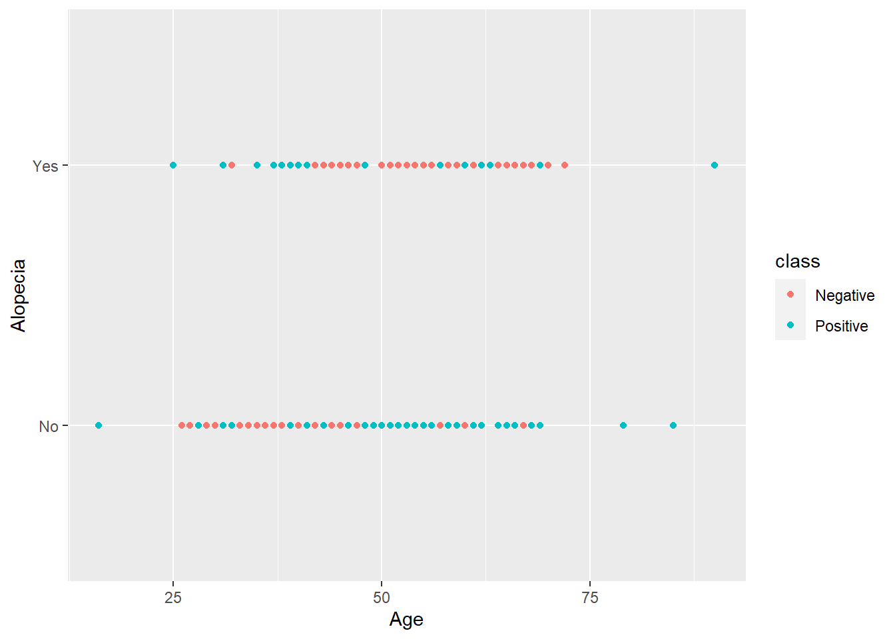

suppressPackageStartupMessages({
library(utils)
library(tidyverse)
suppressWarnings(library(dbscan))
library(car)
})
# Read data
data <- read.csv("diabetes_risk_prediction_dataset.csv")diabetes_risk_prediction_dataset
Libraries
Postiv And negativ counts
# Postiv And negativ count
class_counts <- table(data$class)
print(class_counts)
Negative Positive
200 320 ggplot(data, aes(x = Age, y=Alopecia, color = class)) +
geom_point()
as.factor
cols <- colnames(data)
cols <- cols[-1]
data[,cols] <- lapply(data[,cols] , factor)logistic regression
model <- glm(class ~ ., data = data, family = binomial)
summary(model)
Call:
glm(formula = class ~ ., family = binomial, data = data)
Coefficients:
Estimate Std. Error z value Pr(>|z|)
(Intercept) 2.74660 1.07547 2.554 0.010654 *
Age -0.05117 0.02536 -2.017 0.043657 *
GenderMale -4.35118 0.59819 -7.274 3.49e-13 ***
PolyuriaYes 4.43954 0.70527 6.295 3.08e-10 ***
PolydipsiaYes 5.07044 0.82887 6.117 9.52e-10 ***
sudden.weight.lossYes 0.19033 0.54765 0.348 0.728193
weaknessYes 0.81707 0.53680 1.522 0.127985
PolyphagiaYes 1.19377 0.53351 2.238 0.025250 *
Genital.thrushYes 1.86365 0.55331 3.368 0.000757 ***
visual.blurringYes 0.91587 0.65121 1.406 0.159600
ItchingYes -2.80293 0.67268 -4.167 3.09e-05 ***
IrritabilityYes 2.34073 0.59053 3.964 7.38e-05 ***
delayed.healingYes -0.39163 0.55004 -0.712 0.476456
partial.paresisYes 1.15930 0.52482 2.209 0.027177 *
muscle.stiffnessYes -0.72876 0.58020 -1.256 0.209101
AlopeciaYes 0.15036 0.62008 0.242 0.808402
ObesityYes -0.28904 0.54433 -0.531 0.595424
---
Signif. codes: 0 '***' 0.001 '**' 0.01 '*' 0.05 '.' 0.1 ' ' 1
(Dispersion parameter for binomial family taken to be 1)
Null deviance: 692.93 on 519 degrees of freedom
Residual deviance: 171.65 on 503 degrees of freedom
AIC: 205.65
Number of Fisher Scoring iterations: 8PCA
# Creating a PCA
data_for_pca <- subset(data, select = -class)
# Pipe for numeric
data_dummies <- data_for_pca %>%
mutate_if(is.character, as.factor) %>%
mutate_if(is.factor, ~as.numeric(as.factor(.)))
# Scaling
scaled_data <- scale(data_dummies)
# PCA
pca_result <- prcomp(scaled_data , rank = 2)
summary(pca_result)Importance of first k=2 (out of 16) components:
PC1 PC2
Standard deviation 1.9767 1.4925
Proportion of Variance 0.2442 0.1392
Cumulative Proportion 0.2442 0.3834pca_result$rotation PC1 PC2
Age 0.247638519 0.332162578
Gender -0.210226114 0.314712424
Polyuria 0.341376160 -0.176358475
Polydipsia 0.347392353 -0.234117740
sudden.weight.loss 0.252096999 -0.225500499
weakness 0.286994008 0.124273868
Polyphagia 0.314332479 -0.009443934
Genital.thrush -0.008392557 0.227411914
visual.blurring 0.306027206 0.090392655
Itching 0.202858362 0.358473682
Irritability 0.187486328 0.091082649
delayed.healing 0.226365495 0.324201161
partial.paresis 0.334172236 -0.176071280
muscle.stiffness 0.264639627 0.149848882
Alopecia -0.040735042 0.531784756
Obesity 0.088915856 0.016834013pcadf = as.data.frame(pca_result$x)
pcadf$class = data$class
pcadf$class <- as.factor(data$class)
ggplot(pcadf, aes(x = PC1, y = PC2, color = class)) +
geom_point()K-means clustering
# K means clustering
k <- 2
kmeans_result <- kmeans(pcadf[0:2], centers = k)
cluster_colors_kmeans <- ifelse(kmeans_result$cluster == 1, 'red', '#1f78b4')
ggplot(pcadf, aes(x = PC1, y = PC2, color = class)) +
geom_point(alpha = 0.4, size = 3.5) + geom_point(col = cluster_colors_kmeans)+
scale_color_manual(values = c('red', '#1f78b4'))Hierarchical clustering
# Hierarchical clustering
hc <- hclust(dist(pcadf[1:2]), method = "average")
cluster <- cutree(hc, k)
cluster_colors_hc <- ifelse(cluster == 1, 'red', '#1f78b4')
ggplot(pcadf, aes(x = PC1, y = PC2, color = class)) +
geom_point(alpha = 0.2, size = 3.5) +
geom_point(col = cluster_colors_hc) +
scale_color_manual(values = c('red', '#1f78b4'))The PCA analysis reveals that the data might not be well-suited for clustering using K-means and hierarchical clustering due to its inherent complexity.
Considering the limitations of K-means in capturing non-linear structures, an alternative approach, such as DBSCAN, may yield more satisfactory results.
Dbscan clustering
dbscan_result <- dbscan(dist(pcadf[0:2]), eps = 0.3, minPts = 10)
ggplot(pcadf, aes(x = PC1, y = PC2, color = factor(dbscan_result$cluster))) + geom_point()I was wrong… the dataset doesn’t really seem to fit any pattern
Looks a lot like a random drawn scatter plot
Going back to the drawing boar
# Predict on orginal data
predicted_probabilities <- predict(model, type = "response")
predicted_classes <- ifelse(predicted_probabilities > 0.5, "Positive", "Negative")
# Confusion matrix
conf_matrix1 <- table(Actual = data$class, Predicted = predicted_classes)
conf_matrix1 Predicted
Actual Negative Positive
Negative 183 17
Positive 18 302VIF
# VIF for multicollinearity
predictors <- model.matrix(model)[, -1]
vif_values <- vif(model)
vif_values Age Gender Polyuria Polydipsia
2.304970 1.979832 2.371860 1.888985
sudden.weight.loss weakness Polyphagia Genital.thrush
1.554260 1.819708 1.526770 1.601419
visual.blurring Itching Irritability delayed.healing
2.557368 2.920807 1.426116 1.856358
partial.paresis muscle.stiffness Alopecia Obesity
1.475913 1.747260 2.357181 1.271735 Getting rid of p_value > 0.05
# Getting rid of bad predictors p_value > 0.05
summary_model <- summary(model)
coefficients_filtered <- summary_model$coefficients[summary_model$coefficients[,4] > 0.05, ]
coefficients_filtered Estimate Std. Error z value Pr(>|z|)
sudden.weight.lossYes 0.1903264 0.5476543 0.3475302 0.7281930
weaknessYes 0.8170655 0.5368029 1.5220959 0.1279851
visual.blurringYes 0.9158745 0.6512102 1.4064190 0.1595997
delayed.healingYes -0.3916340 0.5500369 -0.7120141 0.4764560
muscle.stiffnessYes -0.7287595 0.5802035 -1.2560413 0.2091010
AlopeciaYes 0.1503629 0.6200848 0.2424877 0.8084023
ObesityYes -0.2890363 0.5443323 -0.5309923 0.5954241to_remove <- c("sudden.weight", "weakness", "visual.blurring", "delayed.healing", "muscle.stiffness", "Alopecia", "Obesity")Newdf
# Newdf
newdf <- data[, !colnames(data) %in% to_remove]
model <- glm(class ~ ., data = newdf, family = binomial)
summary(model)
Call:
glm(formula = class ~ ., family = binomial, data = newdf)
Coefficients:
Estimate Std. Error z value Pr(>|z|)
(Intercept) 2.73515 0.94445 2.896 0.00378 **
Age -0.04774 0.02090 -2.284 0.02235 *
GenderMale -4.38334 0.58206 -7.531 5.05e-14 ***
PolyuriaYes 4.01848 0.59701 6.731 1.68e-11 ***
PolydipsiaYes 4.96494 0.73902 6.718 1.84e-11 ***
sudden.weight.lossYes 0.58284 0.45164 1.291 0.19687
PolyphagiaYes 1.22519 0.47849 2.561 0.01045 *
Genital.thrushYes 1.61454 0.49322 3.273 0.00106 **
ItchingYes -2.30277 0.51597 -4.463 8.08e-06 ***
IrritabilityYes 2.33621 0.52456 4.454 8.44e-06 ***
partial.paresisYes 1.26054 0.46514 2.710 0.00673 **
---
Signif. codes: 0 '***' 0.001 '**' 0.01 '*' 0.05 '.' 0.1 ' ' 1
(Dispersion parameter for binomial family taken to be 1)
Null deviance: 692.93 on 519 degrees of freedom
Residual deviance: 178.09 on 509 degrees of freedom
AIC: 200.09
Number of Fisher Scoring iterations: 8Classifications with the Logistic Regression
# Classifications
predicted_probabilities <- predict(model, type = "response")
predicted_classes <- ifelse(predicted_probabilities > 0.5, "Positive", "Negative")
# Confusion matrix
conf_matrix2 <- table(Actual = newdf$class, Predicted = predicted_classes)
conf_matrix1 Predicted
Actual Negative Positive
Negative 183 17
Positive 18 302conf_matrix2 Predicted
Actual Negative Positive
Negative 183 17
Positive 22 298print(paste("True count", class_counts))[1] "True count 200" "True count 320"At last even though the models with more features seem to have insignificant p values it still gives a better score.
Conclusively, logistic regression emerges as the most appropriate choice for classification tasks
Its simplicity is a testament to the adage “less is more” in data analysis